遊戲規則
《Monster Fusion Masters》是一款運用六角棋子拼接、封閉白色區域取得分數的回合制策略遊戲。以下整理線上版目前採用的基本規則。
版本參照：Competitive Rule / Rule 20200629；線上玩法核對日期：2026-10-16。

棋盤
棋盤由 61 個六角格構成，中心向外延伸四圈。每格最多放置一枚棋子，已佔用或超出棋盤的位置不可落子。
棋盤上的棋子會影響相鄰格的合法方向與連通狀態，因此落子不只是填空格，也會改變後續可行的組合。

棋子與牌庫
每枚棋子有六條邊，每條邊為白色或黑色。按照白邊數量，棋子分為 0 至 6 白邊的七類；同一類仍可能有不同白邊排列及內部連通形態。
| 白邊數 | 每局牌庫數量 |
|---|---|
| 0 邊 | 2 |
| 1 邊 | 16–30 |
| 2 邊 | 8–15 |
| 3 邊 | 8–15 |
| 4 邊 | 4 |
| 5 邊 | 2 |
| 6 邊 | 2 |


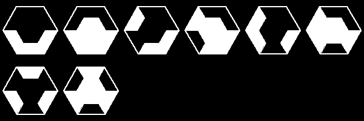
圖中呈現遊戲內牌庫的各種形態；棋子可以旋轉。圖樣數量不等於每局牌庫張數。
合法落子
- 從手牌選擇一枚棋子，必要時將它旋轉至想要的方向。
- 選擇棋盤內尚未被占用的格子。
- 所有與既有棋子接觸的邊必須配對：白邊接白邊、黑邊接黑邊。
- 若任一接觸邊不符，該方向與位置不能落子，需重新選擇。
遊戲畫面可用落子預覽確認合法位置；手牌也可以重新排列，並不改變棋子的屬性。

白色連通、封閉與 DEAD
白色邊相接後，會依棋子本身的連通形態形成一個或多個白色區域。不只是相鄰就會合併，還要看棋子內部的白邊是否相通。


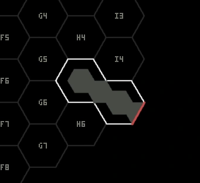
當一個白色連通區域沒有任何未封閉的出口時，會形成可計分的封閉圖形。同一個已計分區域不會因重複判定而重複得分。
若白色連通區域朝棋盤外緣延伸，因出口已無棋盤空格可延續，遊戲會標示為 DEAD。DEAD 與成功封閉不同，不能單純當作封閉得分。
相同白邊排列，也可能有不同連通方式
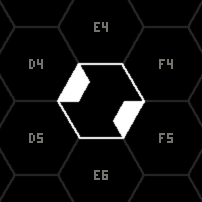
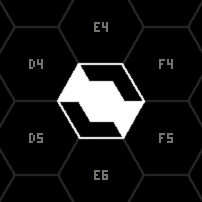
封閉計分表
封閉區域的分數由該白色連通區域涵蓋的不同棋子格數決定。
編號標出不同棋子格；同一格在同一個連通區域中只算一次。以下皆為遊戲實際判定的封閉範例。
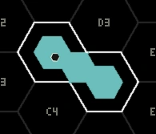
12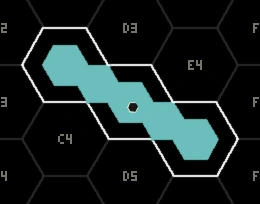
123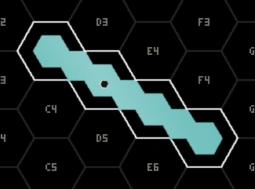
1234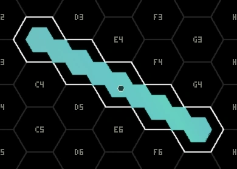
12345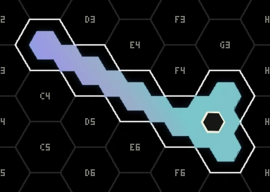
123456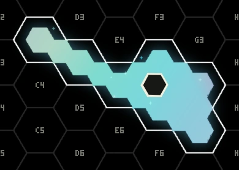
12345671 枚棋子不構成有效得分區域；更大的封閉圖形通常能取得更高分數，但也更需要保留安全的延伸方向。
展開計分速查表
| 封閉區域棋子數 | 得分 |
|---|---|
| 2 | 1 |
| 3 | 2 |
| 4 | 4 |
| 5 | 7 |
| 6 | 10 |
| 7 以上 | 棋子數 × 2 |
回合、PASS 與對局
每局開始時各玩家取得起始手牌；輪到玩家時會依牌庫與手牌上限補牌。玩家可以落子，或在需要時選擇 PASS。
連續 PASS 達 3 次，會失去繼續參與該局的資格；已取得的本局分數仍保留。成功落子後，連續 PASS 計數會依遊戲流程重置。
一般對戰採 3 局；Ranked 積分對戰採 1 局。對戰最終結果由實際局數及系統結算規則決定。
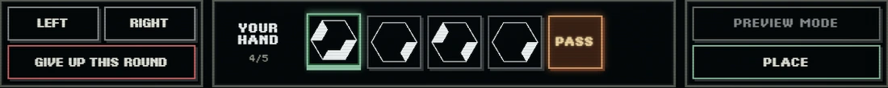